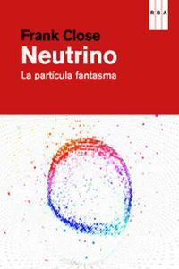

Neutrino
Reseña por Jorge I. Zuluaga

Ver reseña en GoodReads (necesita cuenta)
No es esta, naturalmente, la historia de los neutrinos en el Universo, que han estado aquí desde que comenzó el Big Bang y se producen profusamente, ya sea en las estrellas, en el interior de los planetas o en los choques de partículas por todo el cosmos. Es la historia de cómo estos "fantasmas", estas "partículas casi nada", fueron primero predichos usando únicamente nuestras expectativas sobre la validez universal de las leyes de la física (en particular, una que apreciamos profundamente: la ley de la conservación de la energía), hasta su descubrimiento usando ingeniosos métodos físico-químicos entre finales de los años 1950 y principios de los 1970.
Pero también es la historia sobre la manera como sus increíbles propiedades han venido guiando el desarrollo de la física fundamental. Una historia sobre una búsqueda asombrosa que no termina todavía (a la fecha, la naturaleza precisa de los neutrinos, algunas de sus propiedades fundamentales —tal como su masa, que todavía se desconoce, y su relación con el resto de partículas del universo— no se entienden cabalmente todavía).
El libro está muy bien escrito, es agradable de leer (¡se puede saborear en una sentada!) y no contiene muchos tecnicismos.
Está escrito con un cierto humor, muy al estilo de los libros del gran Leon Lederman, autor del clásico "La partícula divina", un maestro en esto de hacer divulgación de la física con un poquito de picante.
Close es definitivamente otro Lederman. Leer "Neutrino" me ha hecho buscar todos sus otros libros de divulgación en el tema.
Me alegra haber descubierto, así sea "tarde" para mí como físico, este gran divulgador de mi disciplina.
La historia de la predicción y descubrimiento de los neutrinos es asombrosa. Los neutrinos son asombrosos. Vale la pena leer sobre ambos en un libro salido de la pluma de Frank Close. ¡Lean este libro!
(Abajo, unas notas autobiográficas prescindibles)
Como lo saben algunos de los que leen mis reseñas aquí, por estos meses he estado regresando sobre algunos libros que leí hace muchos años (y otros que obviamente no leí, como este), pero también sobre textos que salieron recientemente y que forman parte de una extensa colección de libros de divulgación en física que, en los últimos 30 o 40 años, han revivido para el gran público la increíble historia de la física de partículas y la teoría cuántica; una historia que, además, no termina (todavía hay demasiadas preguntas abiertas, experimentos sin realizarse, ideas originales por descubrir).
Mi motivación original era prepararme para un curso que estoy dictando (mientras escribo esta reseña) sobre este tema justamente. Y es que, después de dictar muchos cursos similares por varios años, descubrí que es bueno leer los libros completos del curso antes de recomendarlos (como diría el filósofo popular Homero Simpson: "¡duh!"). En el proceso he encontrado tantos "tesoros" de la literatura divulgativa, he pasado tantas horas agradables leyendo sobre los temas que me apasionan e incluso he aprendido tantas cosas que no sabía o no había entendido realmente (aunque se supone que tengo un doctorado en la materia), que creo que no volveré a dejar de leer divulgación en mi área en un buen tiempo (había suspendido este placer casi desde que era adolescente).
Una de las cosas que más me impactaron de este libro fue entender que durante mi formación profesional, al final del pregrado y durante mi maestría y doctorado (que fueron justamente en esta área, la fenomenología de los neutrinos y su producción en procesos astronómicos), en realidad fui testigo e incluso participé (si me permiten decirlo así, en tanto mis primeras publicaciones fueron sobre neutrinos y su oscilación, aunque estén refundidas entre la vasta literatura en el tema) de la última parte de la revolución en la historia de la física de los neutrinos. Estuve vivo y trabajaba en el área mientras el problema de los neutrinos solares estaba todavía abierto, cuando llegaron los datos de SNO resolviendo el problema, cuando se publicaron los trabajos sobre las oscilaciones de los neutrinos atmosféricos tomados por Super-Kamiokande y cuando Davis y Koshiba ganaron su Nobel. Esto hizo que este librito fuera aún más emocionante para mí.